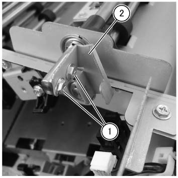
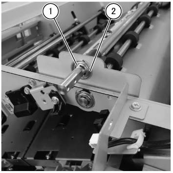
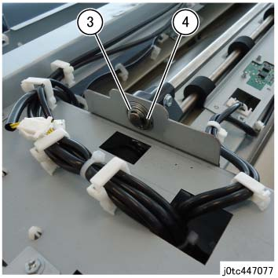
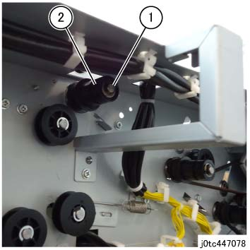
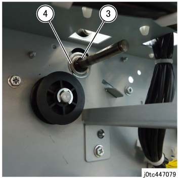
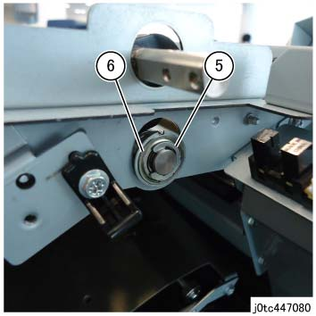
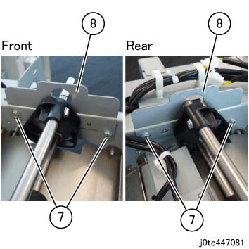
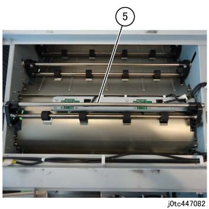

REP 47.11.1 Trans 辊 组件 
参考 PL:PL 47.11
Removal

执行IOT关机步骤. 确认电源已关闭并拔掉电源插头.
打开前盖板. (PL 47.1)
拆卸后盖板. (PL 47.2)
拆卸顶盖组件. (PL 47.1)
拆卸 释放 Inner 盖板. (PL 47.1)
拆卸 Idler 释放 支架 组件. (PL 47.7)
拆卸 释放 链接 组件. (PL 47.7)
拆卸 Arm 链接. (图 1)
拆卸螺钉（x2）.
拆卸 Arm 链接.

(图 1) tcw447026
拆卸轴承 和 E-卡扣 的 T-释放 轴.
拆卸E型卡环 在前面. (图 2)
拆卸轴承 在前面. (图 2)

(图 2) tcw447027
拆卸E型卡环 在后面. (图 3)
拆卸轴承 在后面. (图 3)

(图 3) tc447077
拆卸 Pre Regi 电机组件. (PL 47.11)
拆卸皮带 (Pre Regi. 电机). (PL 47.11)
拆卸 Trans 辊 组件.
拆卸 KL-卡扣 在后面. (图 4)
拆卸 Pulley 在后面. (图 4)

(图 4) tc447078
拆卸 Collar 在后面. (图 5)
拆卸轴承 在后面. (图 5)

(图 5) tc447079
拆卸E型卡环 在前面. (图 6)
拆卸轴承 在前面. (图 6)

(图 6) tc447080
拆卸螺钉（x4）. (图 7)
拆卸 释放 角度 支架 (x2). (图 7)

(图 7) tc447081
拆卸 Trans 辊 组件 使用 T-释放 轴, 前面 释放 Cam, 和 后面 释放 Cam attached. (图 8)

(图 8) tc447082